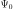
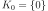
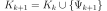

SequentialStrategy¶
-
class
SequentialStrategy(*args)¶ Sequential truncation strategy.
- Available constructors:
SequentialStrategy(orthogonalBasis, maximumDimension)
- Parameters
- orthogonalBasis
OrthogonalBasis An OrthogonalBasis.
- maximumDimensionpositive int
Maximum number of terms of the basis.
- orthogonalBasis
See also
Notes
The sequential strategy consists in constructing the basis of the truncated PC iteratively. Precisely, one begins with the first term , that is , and one complements the current basis as follows: . The construction process is stopped when a given accuracy criterion, defined in the
ProjectionStrategy, is reached, or when is equal to
a prescribed maximum basis size
is equal to
a prescribed maximum basis size  .
.Examples
>>> import openturns as ot >>> ot.RandomGenerator.SetSeed(0) >>> # Define the model >>> inputDim = 1 >>> model = ot.SymbolicFunction(['x'], ['x*sin(x)']) >>> # Create the input distribution >>> distribution = ot.ComposedDistribution([ot.Uniform()]*inputDim) >>> # Construction of the multivariate orthonormal basis >>> polyColl = [0.0]*inputDim >>> for i in range(distribution.getDimension()): ... polyColl[i] = ot.StandardDistributionPolynomialFactory(distribution.getMarginal(i)) >>> enumerateFunction = ot.LinearEnumerateFunction(inputDim) >>> productBasis = ot.OrthogonalProductPolynomialFactory(polyColl, enumerateFunction) >>> # Truncature strategy of the multivariate orthonormal basis >>> # We want to select among the maximumDimension = 20 first polynomials of the >>> # multivariate basis those verifying the convergence criterion. >>> maximumDimension = 20 >>> adaptiveStrategy = ot.SequentialStrategy(productBasis, maximumDimension)
- Attributes
thisownThe membership flag
Methods
Compute initial basis for the approximation.
getBasis()Accessor to the underlying orthogonal basis.
Accessor to the object’s name.
getId()Accessor to the object’s id.
Accessor to the maximum dimension of the orthogonal basis.
getName()Accessor to the object’s name.
getPsi()Accessor to the orthogonal polynomials of the basis.
Accessor to the object’s shadowed id.
Accessor to the object’s visibility state.
hasName()Test if the object is named.
Test if the object has a distinguishable name.
setMaximumDimension(maximumDimension)Accessor to the maximum dimension of the orthogonal basis.
setName(name)Accessor to the object’s name.
setShadowedId(id)Accessor to the object’s shadowed id.
setVisibility(visible)Accessor to the object’s visibility state.
updateBasis(alpha_k, residual, relativeError)Update the basis for the next iteration of approximation.
-
__init__(*args)¶ Initialize self. See help(type(self)) for accurate signature.
-
getBasis()¶ Accessor to the underlying orthogonal basis.
- Returns
- basis
OrthogonalBasis Orthogonal basis of which the adaptive strategy is based.
- basis
-
getClassName()¶ Accessor to the object’s name.
- Returns
- class_namestr
The object class name (object.__class__.__name__).
-
getId()¶ Accessor to the object’s id.
- Returns
- idint
Internal unique identifier.
-
getMaximumDimension()¶ Accessor to the maximum dimension of the orthogonal basis.
- Returns
- Pinteger
Maximum dimension of the truncated basis.
-
getName()¶ Accessor to the object’s name.
- Returns
- namestr
The name of the object.
-
getPsi()¶ Accessor to the orthogonal polynomials of the basis.
- Returns
- polynomialslist of polynomials
Sequence of
analytical polynomials.
Notes
The method
computeInitialBasis()must be applied first.Examples
>>> import openturns as ot >>> productBasis = ot.OrthogonalProductPolynomialFactory([ot.HermiteFactory()]) >>> adaptiveStrategy = ot.FixedStrategy(productBasis, 3) >>> adaptiveStrategy.computeInitialBasis() >>> print(adaptiveStrategy.getPsi()) [1,x0,-0.707107 + 0.707107 * x0^2]
-
getShadowedId()¶ Accessor to the object’s shadowed id.
- Returns
- idint
Internal unique identifier.
-
getVisibility()¶ Accessor to the object’s visibility state.
- Returns
- visiblebool
Visibility flag.
-
hasName()¶ Test if the object is named.
- Returns
- hasNamebool
True if the name is not empty.
-
hasVisibleName()¶ Test if the object has a distinguishable name.
- Returns
- hasVisibleNamebool
True if the name is not empty and not the default one.
-
setMaximumDimension(maximumDimension)¶ Accessor to the maximum dimension of the orthogonal basis.
- Parameters
- Pinteger
Maximum dimension of the truncated basis.
-
setName(name)¶ Accessor to the object’s name.
- Parameters
- namestr
The name of the object.
-
setShadowedId(id)¶ Accessor to the object’s shadowed id.
- Parameters
- idint
Internal unique identifier.
-
setVisibility(visible)¶ Accessor to the object’s visibility state.
- Parameters
- visiblebool
Visibility flag.
-
thisown¶ The membership flag
-
updateBasis(alpha_k, residual, relativeError)¶ Update the basis for the next iteration of approximation.
Notes
No changes are made to the basis in the fixed strategy.